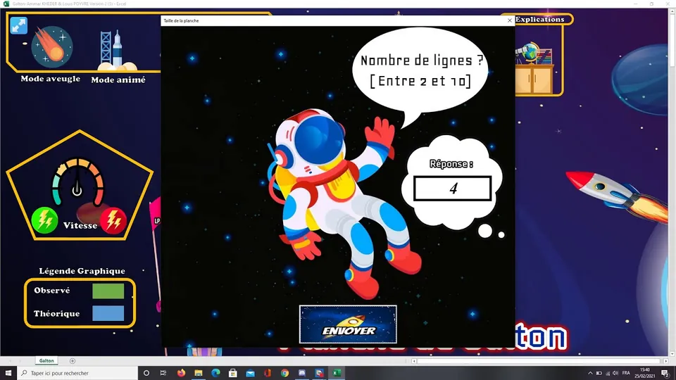

2:20Planche de Galton sous Excel, démo
Les fusées tombent entre les clous et la courbe en cloche apparaît, le tout en VBA sous Excel.
Réalisé avec mon camarade de promotion Louis lors des travaux pratiques de statistique de première année du DUT STID Niort, ce projet revisite, entièrement en VBA dans Microsoft Excel, l’emblématique planche de Galton, l’appareil inventé au XIXe siècle par Sir Francis Galton.
L’application fait tomber des fusées virtuelles dans une grille triangulaire de clous. À chaque clou, la fusée part à gauche ou à droite avec la même probabilité. Après de nombreux lâchers, les cases du bas se remplissent et révèlent deux résultats fondamentaux de la théorie des probabilités. D’abord, la loi des grands nombres : la distribution empirique converge vers la loi binomiale. Ensuite, le théorème central limite : avec assez de rangées de clous, la loi binomiale converge elle-même vers la gaussienne.
Ce travail a été encadré par Laurent Bureau et François Garnier, et l’équipe enseignante l’a remarqué pour sa façon particulièrement soignée de traiter le sujet.
VBA
Technologie
macros Excel
2020
Janvier
TP de 1re année
2
Auteurs
Ammar et Louis
B → N
Loi
binomiale → normale

2:20Les fusées tombent entre les clous et la courbe en cloche apparaît, le tout en VBA sous Excel.